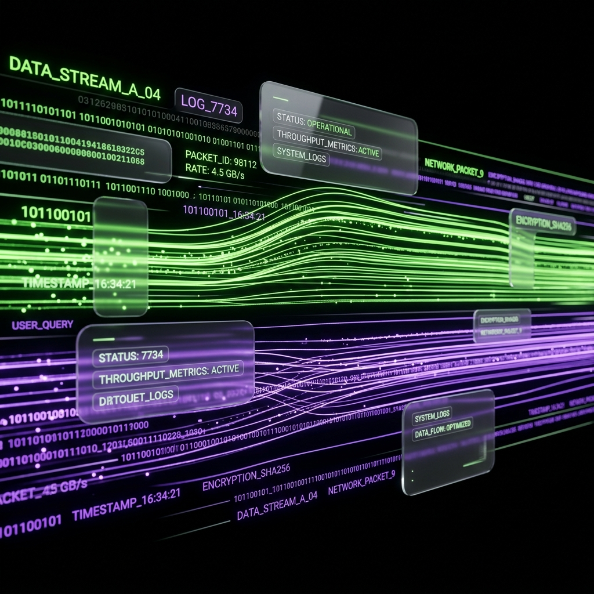
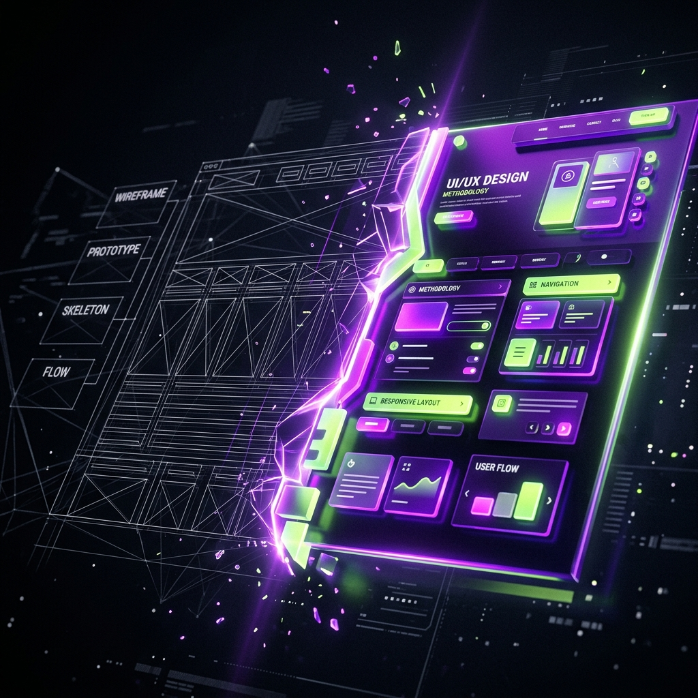

A metodologia utilizada por marcas premium para reter tráfego,
aniquilar a fricção de uso e maximizar a captação de clientes através do web design.
As empresas gastam fortunas com tráfego pago para enviar clientes a sites genéricos, lentos e difíceis de usar.
O problema não é o marketing, é o destino. Tráfego não salva uma interface amadora; ele apenas expõe as falhas da sua marca para mais pessoas. Para fechar negócios de alto valor, sua presença digital precisa ser blindada.

Estética premium com arquitetura de informação focada no comportamento humano.
Desenvolvimento focado em renderização sub-segundo e otimização extrema.
Engenharia técnica que garante inclusão e alavanca o posicionamento no Google.
A Universidade de Stanford comprovou que os consumidores julgam a confiabilidade de uma empresa baseados na qualidade do design. Um visual premium não é vaidade, é a fundação da confiança do cliente.
Tempo exato que um cérebro leva para formar uma opinião. A interface comunica autoridade antes de qualquer texto ser lido. Você só tem 50 milissegundos para ganhar o lead.
Metade dos usuários mobile abandonam um site se ele demorar mais de 3 segundos para carregar. Se a sua página é lenta, você está perdendo 5 a cada 10 leads que você pagou caro para adquirir no Ads.
Estudos corporativos mostram que a cada 1 segundo reduzido no tempo de carregamento, a taxa de conversão aumenta até 20%. Performance extrema significa diminuir severamente o seu Custo de Aquisição (CAC).
O algoritmo do Google penaliza sites inacessíveis. Estruturar o site com a semântica correta (WCAG) eleva o seu SEO organicamente sem a necessidade de maior investimento financeiro.
Criar um site plenamente navegável por leitores de tela e com o contraste ideal garante que você não deixe nenhum cliente portador de deficiência fora do seu funil de conversão.

Pesquisa, análise da concorrência direta e alinhamento de metas de negócios.
Wireframing, arquitetura de informação e mapeamento da jornada do usuário.
Criação visual premium. Seu projeto ganha forma, estética luxuosa e autoridade.
Desenvolvimento limpo, otimizado para velocidade sub-segundo e testes rigorosos.
O design do seu negócio precisa ser tão premium quanto o produto que você vende.